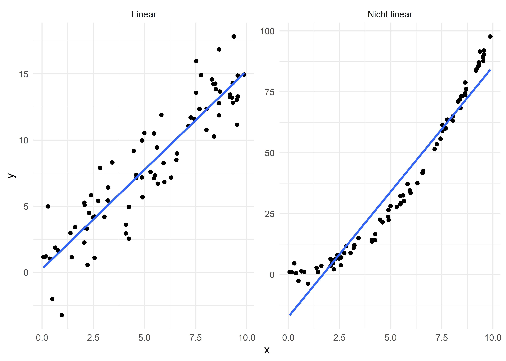

Voraussetzungen im GLM
Wenn wir von Methoden in der Psychologie, oder auch der Medizin reden, meinen wir in den meisten Fällen irgendetwas, das mit dem allgemeinen linearen Modell (Generealized Linear Model, kurz GLM) zu tun hat. Mit diesem Modell können wir (auch nicht-) lineare Zusammenhänge darstellen und beschreiben. Grunsätzlich nehmen wir vereinfacht an: \[ y = \beta_0 + \beta_1\cdot x + \varepsilon \]
An dieser Stelle verzichten wir mal auf den Index, denn hier geht es um die generelle Idee. Wir versuchen den Wert eines Probanden auf einer abhängigen Variable (\(y\)) durch eine lineare Kombination (= Addition) von Einflüssen dazustellen. Diese können dann so etwas sein, wie der \(y\)-Achsen-Abschnitt (\(\beta_0\)) und die Steigung einer Geraden (\(\beta_1\)) in Abhängigkeit von einer unabhängigen Variable (\(x\)). Natürlich ist unser Modell nie perfekt, wir können es immer nur schätzen. Und da das Modell immer eine vereinfachte Form der Wirklichkeit ist, die Wirklichkeit alos viel komplizierter ist, rechnen wir bereits damit, dass wir Fehler machen, die wir Residuen nennen (\(\varepsilon\)). Dieses einfache Modell können wir dann um viel mehr Variablen erweitern und transformieren.
Wichtig ist allerdings, dass wir uns, egal wie kompliziert das Modell auch sein mag, immer noch im GLM bewegen. Die Qualität und Teststatistiken des Modells hängen dabei jedoch an bestimmten Voraussetzungen oder Annahmen an das Modell. Bei parametrischen Tests haben diese viel mit der Normalverteilung zu tun. Die wichtigsten Annahmen sind dabei
- Additivität und Linearität
- Normalverteilung
- Homoskedastizität
- Unabhängigkeit
Verletzungen dieser Annahmen haben Auswrikungen auf die Schätzung der Parameter and sich (die \(\beta\)), die Konfidenzintervalle dieser Parameter und die Signifikanztests.
Additivität
Die Annahme der Additivität ist relativ simpel. Im GLM (s.o.) haben wir uns dafür entschieden, alle Zusammenhänge als Additionen darzustellen, somit sollten die Daten auch diese Additivität wiederspiegeln. Für simple Modelle bedeutet das: Der Zusammenhang sollte linear sein. Um diese Annahme zu prüfen, sollte man für sich immer explorative Abbildungen erstellen!

Für den linken Datensatz mit jeweils einer kontinuierlichen unabhängigen und abhängigen Variable können wir uns ohne Probleme im GLM bewegen, der Zusammenhang sieht linear aus. Der rechte Datensatz widerum ist überhaupt nicht linear. Wenn wir hier einfach Methoden des GLM zur Auswertung nutzen, werden wir alles, was uns wichtig ist (Parameter, Konfidenzintervalle, Teststatistiken) falsch schätzen.
Normalverteilung
Mit keiner anderen Voraussetzung oder Annahme wird so viel Schindluder getrieben als mit der Annahme der Normalverteilung. Nein, die Daten müssen nicht normalverteilt sein!. Was normalverteilt sein muss, hängt von der Fragestellung ab (Field, 2018).
Wollen wir unsere Parameter möglichst gut schätzen (also möglichst ohne bias), dann müssen die Residuen (= Fehler des Modells) normalverteilt sein. Interessierun uns die Konfidenzintervalle oder Signifikanztests, dann muss die Stichprobenkennwerteverteilung normalverteilt sein (Bortz & Schuster, 2010; Eid et al., 2017). Mal wieder so ein Begriff, mit dem die Statistiker uns das Leben schwer machen.
Wir zerlegen den Begriff mal in “Stichprobenkennwert” und “Verteilung”. Ein Stichprobenkennwert ist genau das, was es meint, ein Wert, mit dem die Stichprobe beschrieben wird. Am häufigsten benutzen wir da den Mittelwert oder Median der Stichprobe. Deren Verteilung soll normalverteilt sein, was wir nach dem zentralen Grenzwertsatz bei einer hinreichend großen Gruppengröße (ca. \(n > 30\)) automatisch annehmen können.
Zur Ehrenrettung der Normalverteilungs-Tester: Wenn wir mit kleinen Stichproben (\(n < 30\)) arbeiten, können wir nicht davon ausgehen, dass der zentrale Grenzwertsatz greift und die Stichprobenkennwerteverteilung automatisch normalverteilt ist. Wenn unsere Daten jedoch normalverteilt sind, könnten wir vermuten, dass auch die Stichprobenkennwerteverteilung normalverteilt ist. Das überprüfen wir dann mit einem QQ-Plot.

Normalverteilte Daten erscheinen in einem QQ-Plot als Punkte auf oder an der eingezeichneten Linie. Im linken Beispiel sieht das sehr normalverteilt aus, im rechten jedoch überhaupt nicht. Um das zu überprüfen gibt es Signifikanztests, wie den Kolmogorov–Smirnov- oder Shapiro–Wilk-Test, die die Alternativhypothese testen, dass die Verteilung der betrachteten Variable nicht normalverteilt ist. Diese Tests kann man jedoch nicht empfehlen, weil sie dieselben Schwächen haben, wie alle anderen Null-Hypothesen-Signifikanztests auch. Erstens ist der \(p\)-Wert abhängig von der Stichprobengröße, das heißt, dass ich mit zunehmender Stichprobengröße eine höherer Wahrscheinlichkeit habe, ein signifikantes (in diesem Falle unerwünschtes Ergebnis) zu erzielen. Selbst super aussehende Verteilungen sind dann laut Test von der Normalverteilung signifkant verschieden. Zweitens heißt ein nicht signifikantes Ergebnis nicht, dass die Verteilungen gleich sind (Goodman, 2008).
Homoskedastizität
Auch bekannt als Varianzhomogenität. Hiermit ist gemeint, dass die Daten für jede Stufe der unabhängigen Variable gleichmäßig streuen. Auch das überprüft man am besten mit einer Abbildung.

Homoskedastische Daten, also Daten mit Varianzhomogenität hast Du bereits in der linken Abbildung zur Additivität gesehen, in der die Daten gleichmäßig um die blaue Linie streuten. In diesem Fall jedoch sind die Daten richtig schön nicht varianzhomogen. Zu Beginn sind alle Daten eng um die blaue Linie versammelt, aber je größer \(x\) wird, desto breiter streuen die Daten. Anders ausgedrückt könnte man auch sagen, dass die Residuen (die Fehler meiner Schätzung = der Abstand der Punkte von der blauen Linie = \(\varepsilon\)) abhängig von meiner unabhängigen Variable sind, und das darf nicht sein!
Gibt es Methoden, Varianzhomogenität auch mit einem Signifikanztest zu überprüfen? Na klar, Tests gibt’s für alles, aber auch hier rate nicht nur wieder ich vom Gebrauch ab (Zimmerman, 2004). Kurz gesagt: Varianzhomogenität ist kein Problem bei gleich großen Gruppen, problemtisch wird’s bei verschieden großen Gruppen. Tests, die Varianzhomogenität prüfen, funktionieren am besten bei gleich großen Gruppen und großen Stichproben. Im Umkehrschluss bedeutet das, dass die Tests genau dann nicht richtig funktionieren, wenn es wirklich problematisch wird, also bei ungleichen Gruppengrößen und kleinen Stichproben. In diesen Fällen kann man die Ergebnisse lieber korrigieren, als die Analyse aufgrund von vorläufigen Tests gar nicht durchzuführen.
Unabhängigkeit
Mit der Unabhängigkeit ist eigentlich die Unabhängigkeit der Fehler (\(\varepsilon\)) gemeint. Beispielweise sollen die Fehler eines Probanden nicht mit den Fehlern eines anderen Probanden zusammenhängen. Wenn man unabhängige Stichproben zieht, ist das in der Regel immer erfüllt; betrachtet man jedoch verbundene Stichproben (klassischerweise wie in Designs mit Messwiederholung), sind die Fehler nicht mehr abhängig. Stell dir einmal eine Studie vor, in der Felix und Johanna einen Test zur Stresstoleranz in drei Wochen hintereinander ausgefüllt haben. Du möchtest nun herauskriegen, ob sich der Test-Wert der beiden im Mittel verändert hat. Die Beobachtungen sind aber nicht mehr unabhängig – im Gegenteil. Felix’ Werte sind durch Felix an sich beeinflusst und Johannas Werte von Johanna. Die Werte von Felix und Johanna sind also für sich genommen ähnlicher als die Werte untereinander, weil beide individuelle “Fehler” machen. Wie man damit umgeht, wird auf den entsprechenden Seiten erklärt.
Literatur
Bortz, J., & Schuster, C. (2010). Statistik für Human- und Sozialwissenschaftler (7., vollständig überarbeitete und erweiterte Auflage). Springer. https://doi.org/10.1007/978-3-642-12770-0
Eid, M., Gollwitzer, M., & Schmitt, M. (2017). Statistik und Forschungsmethoden: Mit Online-Materialien (5., korrigierte Auflage). Beltz.
Field, A. P. (2018). Discovering Statistics using IBM SPSS Statistics (5th ed.). SAGE.
Goodman, S. (2008). A dirty dozen: twelve p-value misconceptions. Seminars in Hematology, 45(3), 135–140. https://doi.org/10.1053/j.seminhematol.2008.04.003
Zimmerman, D. W. (2004). A note on preliminary tests of equality of variances. The British Journal of Mathematical and Statistical Psychology, 57(Pt 1), 173–181. https://doi.org/10.1348/000711004849222